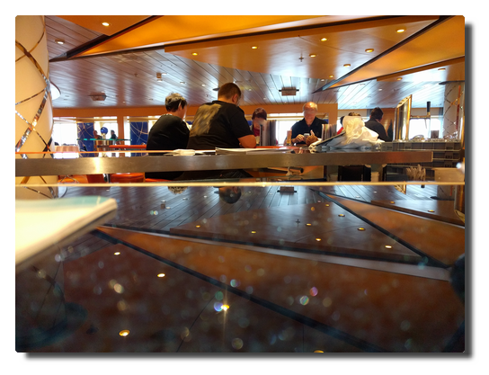

Love Boat - The Real Story. Tromsø
| Anke (encarsia) | Also available in: Deutsch
Day 8. Tromsø rain, Tromsø rain
At noon we arrive the ports of the largest north-Norwegian city Tromsø where we will be staying for a whole day. Our berth is some distance from the city centre so we can use a bus shuttle set up by the travel business.
|  |
|---|
| Signal! |
I walk through the city and of course also cross the tromsøbrua (Tromsø bridge) to the Ishavskatedralen (Arctic Cathedral).
It is raining at temperatures broadly above freezing point and the compacted snow has transformed into thick ice tiles by repeated thawing and freezing that are now defrosting. One now walk on water covered ice shells surrounded by deep pond-like puddles permanently fed by thawing water. In the evening my shoes are completely soaked through.
The previously postponed Arctic circle baptism ceremony is held at the AIDA bar. This activity makes me have a premonition of the 'Ballermann' nature of these swimming club vacations that common cruises use to be. I take the next chance to nope out of it.
A part of our travel party attends a concert at the Arctic Cathedral but I go to bed early
 |
|---|
 |
 |
| Quite pleasent around here and other shipping companies also have nice ships (Yes, that is the "Viking Sky"). |
Day 9. Sortland calling
It is raining. We are still moored in Tromsø and I am out for a walk in the city buying postcards that I will dispatch at the next stop. It is raining.
We finally depart to destination Sortland. I spend the afternoon drinking coffee, solving crosswords and writing postcards. Best holiday ever.
Day 10. A storm is coming
My land excursion to the fascinating Trollfjord is going to start at 8 o'clock so the alarm clock rang early. There are only a few others having breakfast this early, some also booked the Trollfjord boat trip. Around 9 o'clock it becomes certain: there will be no Trollfjord. There will be no Sortland.
Due to heavy swell and wind there is no chance to dock in Sortland. Plans are officially changed in the course of the morning. We will spend another day on the sea and head directly to Trondheim. The ship is rolling through the Atlantic ocean and demands plenty of victims holding out in their cabins. Free seats at the bars.
I'm getting into a slightly sentimental mood. More than half of our travel lies behind us, we are heading south, only two stops ahead before we are going on a last day on the sea back to Hamburg.
My brain cannot completely process the fact yet that in a few days after being together with hundreds of people for two weeks chances are close to zero to see anybody of these ever again. The guests are going home and continue their lives as before and the staff will be seeing the next faces for two weeks and continues to do what they have done before which is working their asses off (Kudos to all of you).
Thinking about this it appears even more bizarre watching befriending attempts among guests towards crew members. How does that work? Are these people on cruises that often that they meet the same staff all along? Working in service myself I know this kind of behaviour. Of course some people are more sympathetic than others. So up to a certain degree you are willing to communicate on a more informal level without crossing the line of professionality doing so.
On a cruiseship the situation is completely odd. As a guest this may be the journey of my life and every single day is just awesome. For other guests you may be the annoying neighbour with a strange dialect or the nice random conversional partner on your daily morning walk on deck. For the crew you are the one spreading the clothes on the cabin's sofa, roaming through the early morning across the ship and ordering Ipanemy without sugar and drinking even more espresso at the bar. Til the next ones arrive.
Comments
Comments powered by Disqus